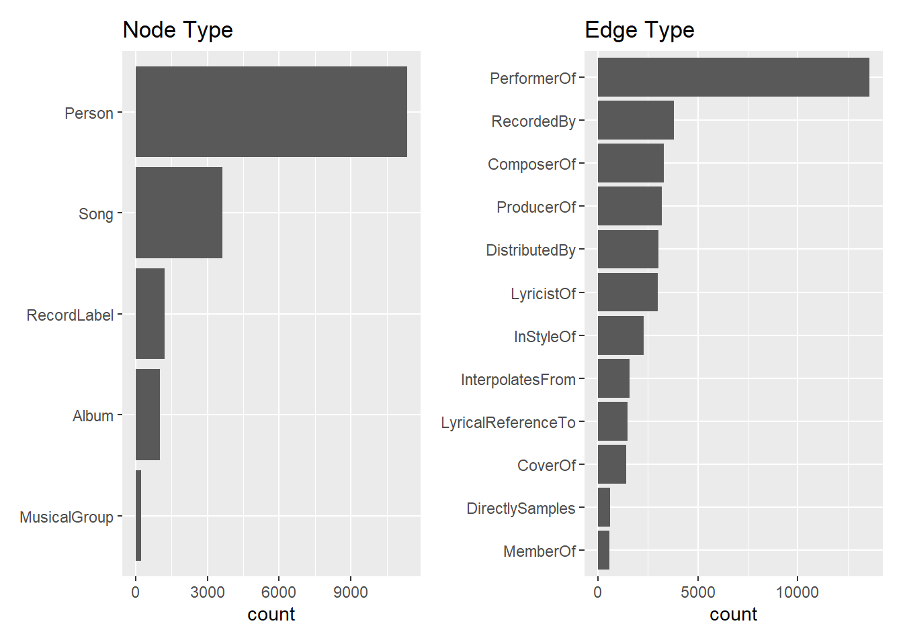
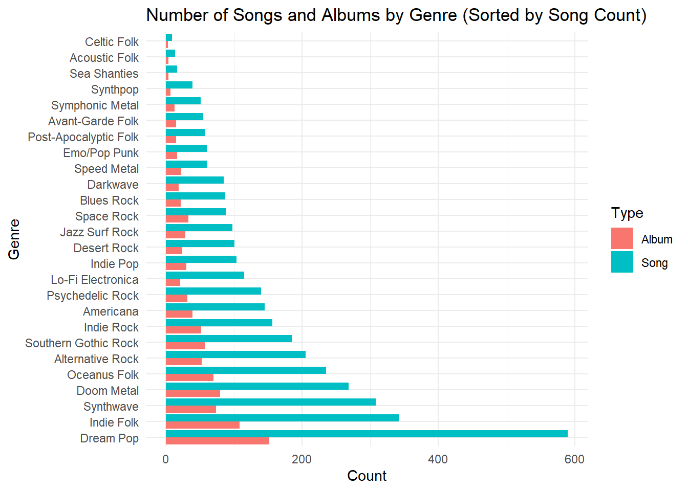
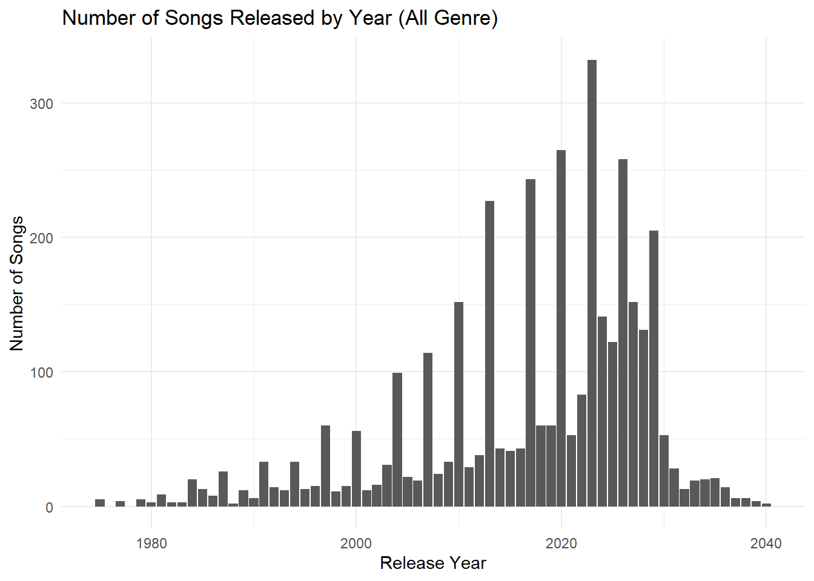
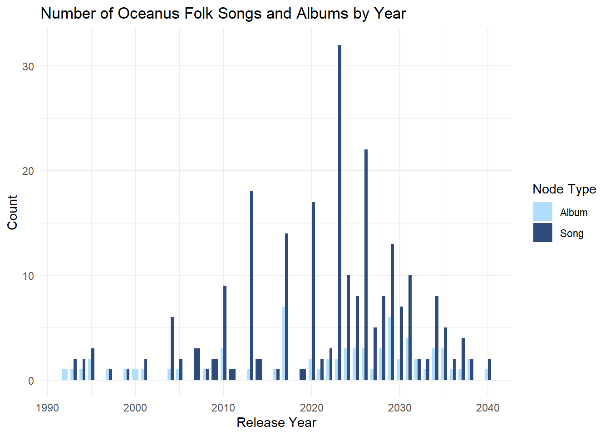
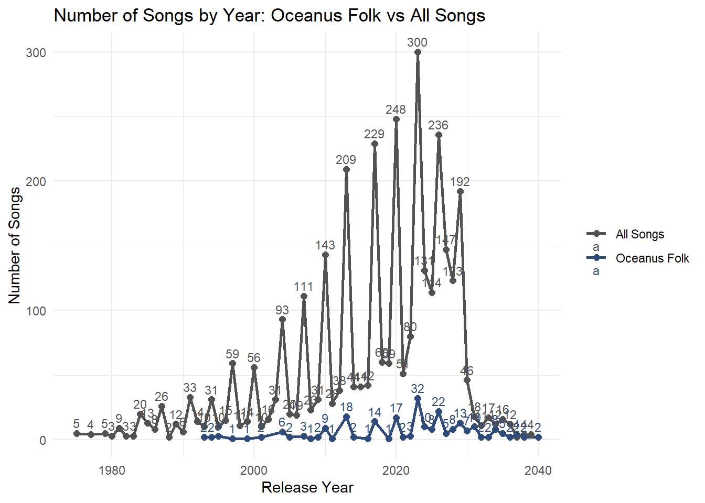
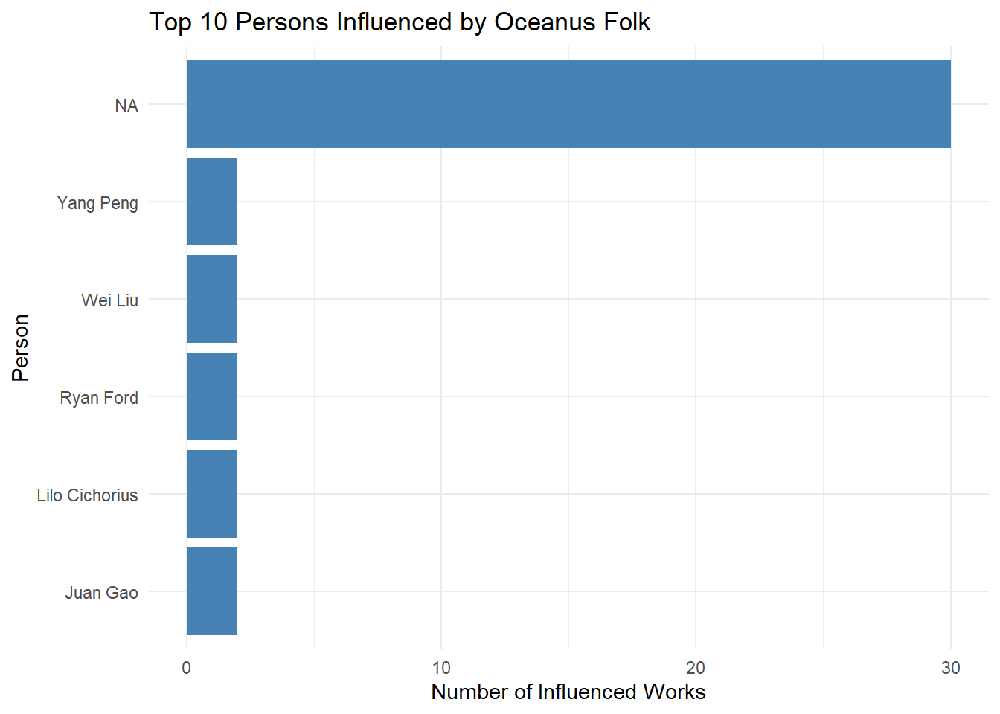

pacman::p_load(tidyverse, jsonlite,
SmartEDA, tidygraph,
ggraph,patchwork,DT,visNetwork,scales)Take Home Exercise 02:
Oceanus Folk: Then-and-Now
Data Preparation
Import R Packages
For data cleaning, the following R packages will be used. They are tidyverse, jsonlite, tidygraph and ggraph.
Import Data
For the purpose of this exercise, MC1_graph.json file will be used. Before getting started, you should have the data set in the data sub-folder.
In the code chunk below, fromJSON() of jsonlite package is used to import MC1_graph.json file into R and save the output object
kg <- fromJSON("data/MC1_graph.json")Inspect Structure
str(kg, max.level = 1) #只看最高level的data structureList of 5
$ directed : logi TRUE
$ multigraph: logi TRUE
$ graph :List of 2
$ nodes :'data.frame': 17412 obs. of 10 variables:
$ links :'data.frame': 37857 obs. of 4 variables:Convert year-like character to integer
# Convert year-like character columns into integer year
kg$nodes <- kg$nodes %>%
mutate(
release_date = as.integer(release_date),
written_date = as.integer(written_date),
notoriety_date = as.integer(notoriety_date)
)Extracting the edges and nodes tables
Next, as_tibble() of tibble package package is used to extract the nodes and links tibble data frames from kg object into two separate tibble data frames called nodes_tbl and edges_tbl respectively.
#Extract nodes and edges from kg
nodes_tbl <- as_tibble(kg$nodes)
edges_tbl <- as_tibble(kg$links)Initial EDA
Frequency distribution of Node Type and Edge Type
Uses ggplot2 functions to reveal the frequency distribution of Node Type field of nodes_tbl.
#|code-fold: true
#|code-summary: "Click to View Code"
#|warning: false
#|message: false
# 图 1：Node Type 分布（按频数从高到低排序）
node_order <- nodes_tbl %>%
count(`Node Type`) %>%
arrange(n) %>%
pull(`Node Type`)
p1 <- ggplot(data = nodes_tbl, aes(y = factor(`Node Type`, levels = node_order))) +
geom_bar() +
labs(title = "Node Type", y = NULL)
# 图 2：Edge Type 分布（按频数从高到低排序）
edge_order <- edges_tbl %>%
count(`Edge Type`) %>%
arrange(n) %>%
pull(`Edge Type`)
p2 <- ggplot(data = edges_tbl, aes(y = factor(`Edge Type`, levels = edge_order))) +
geom_bar() +
labs(title = "Edge Type", y = NULL)
# 并排排列
p1 + p2
Creating knowledge graph
Mapping from node id to row index
Before we can go ahead to build the tidygraph object, it is important for us to ensures each id from the node list is mapped to the correct row number. This requirement can be achive by using the code chunk below.
id_map <- tibble(id=nodes_tbl$id,
index = seq_len(
nrow(nodes_tbl)
))
#处理后就没有id=0了Map source and target IDs to row indices
Next, we will map the source and the target IDs to row indices by using the code chunk below.
edges_tbl <- edges_tbl %>%
left_join(id_map, by = c("source" = "id")) %>%
rename(from = index) %>%
left_join(id_map, by = c("target" = "id")) %>%
rename(to = index)Filter out any unmatched (invalid) edges
Lastly, the code chunk below will be used to exclude the unmatch edges.
edges_tbl <- edges_tbl%>%
filter(!is.na(from), !is.na(to))Creating tidygraph
Lastly, tbl_graph() is used to create tidygraph’s graph object by using the code chunk below.
graph <- tbl_graph(nodes = nodes_tbl,
edges = edges_tbl,
directed = kg$directed)You might want to confirm the output object is indeed in tidygraph format by using the code chunk below.
class(graph)[1] "tbl_graph" "igraph" Visualising the knowledge graph
In this section, we will use ggraph’s functions to visualise and analyse the graph object.Visualising the knowledge graph.
Several of the ggraph layouts involve randomisation. In order to ensure reproducibility, it is necessary to set the seed value before plotting by using the code chunk below.
set.seed(1234)ggraph(graph, layout = "fr") +
geom_edge_link(alpha = 0.3,
colour = "gray") +
geom_node_point(aes(color = `Node Type`),
size = 1) +
geom_node_text(aes(label = name),
repel = TRUE,
size = 2.5) +
theme_void()REDO Q2: The Spread of Oceanus Folk
EDA
Type of Nodes and Edges
Code
# 图 1：Node Type 分布（按频数从高到低排序）
node_order <- nodes_tbl %>%
count(`Node Type`) %>%
arrange(n) %>%
pull(`Node Type`)
p1 <- ggplot(data = nodes_tbl, aes(y = factor(`Node Type`, levels = node_order))) +
geom_bar() +
labs(title = "Node Type", y = NULL)
# 图 2：Edge Type 分布（按频数从高到低排序）
edge_order <- edges_tbl %>%
count(`Edge Type`) %>%
arrange(n) %>%
pull(`Edge Type`)
p2 <- ggplot(data = edges_tbl, aes(y = factor(`Edge Type`, levels = edge_order))) +
geom_bar() +
labs(title = "Edge Type", y = NULL)
# 并排排列
p1 + p2
| Edge Type | From Node Type (A) | To Node Type (B) | Flow of Influence | |
|---|---|---|---|---|
| Produce | DistributedBy | song/album | record label | / |
| Produce | RecordedBy | song/album | record label | / |
| Contribute/Create | ComposerOf | person | song/album | A to B |
| Contribute/Create | ProducerOf | person | song/album | A to B |
| Contribute/Create | LyricistOf | person | song/album | A to B |
| Contribute/Create | PerformerOf | person | song/album | A to B |
| Belong to | MemberOf | person | music group | / |
| Influence | InStyleOf | song/album | song/album | B to A |
| Influence | InterpolatesFrom | song/album | song/album | B to A |
| Influence | LyricalReferenceTo | song/album | song/album | B to A |
| Influence | CoverOf | song/album | song/album | B to A |
| Influence | DirectlySamples | song/album | song/album | B to A |
Type of Genres
There are 26 genres in total with dream pop having most songs and albums. Oceanus Folk ranks 5th with 70 albums and 235 songs in total.
Code
# Count the number of Songs and Albums in each genre
genre_summary <- nodes_tbl %>%
filter(`Node Type` %in% c("Song", "Album")) %>%
count(genre, `Node Type`) %>%
pivot_wider(names_from = `Node Type`, values_from = n, values_fill = 0) %>%
arrange(desc(Song + Album))
print(genre_summary)# A tibble: 26 × 3
genre Album Song
<chr> <int> <int>
1 Dream Pop 152 590
2 Indie Folk 108 342
3 Synthwave 74 308
4 Doom Metal 80 268
5 Oceanus Folk 70 235
6 Alternative Rock 53 205
7 Southern Gothic Rock 57 185
8 Indie Rock 52 156
9 Americana 39 145
10 Psychedelic Rock 32 140
# ℹ 16 more rowsCode
# 1. Sort by song count
genre_order <- genre_summary %>%
arrange(desc(Song)) %>%
pull(genre)
# 2. transform to long table
genre_long <- genre_summary %>%
pivot_longer(cols = c(Song, Album), names_to = "Type", values_to = "Count") %>%
mutate(genre = factor(genre, levels = genre_order))
# 3. plot the chart
ggplot(genre_long, aes(x = genre, y = Count, fill = Type)) +
geom_bar(stat = "identity", position = position_dodge(width = 0.9)) +
#geom_text(aes(label = Count),
#position = position_dodge(width = 0.9),
#hjust = 1.05, color = "black", size = 3.2) +
labs(
title = "Number of Songs and Albums by Genre (Sorted by Song Count)",
x = "Genre",
y = "Count"
) +
theme_minimal() +
coord_flip()
Songs
Code
# Step 1: Filter all Song nodes
songs_tbl <- nodes_tbl %>%
filter(`Node Type` == "Song")
# Step 2: Count total number of songs
total_songs <- nrow(songs_tbl)
# Step 3: Count number of notable songs
notable_songs <- songs_tbl %>%
filter(notable == TRUE) %>%
nrow()
# Step 4: Calculate proportion
notable_ratio <- round(notable_songs / total_songs, 3)
# Output summary (safe version, without emojis)
tibble(
Total_Songs = total_songs,
Notable_Songs = notable_songs,
Proportion_Notable = notable_ratio
)# A tibble: 1 × 3
Total_Songs Notable_Songs Proportion_Notable
<int> <int> <dbl>
1 3615 3367 0.931Code
# Step 1: Filter song nodes with valid release date
songs_by_year <- nodes_tbl %>%
filter(`Node Type` == "Song", !is.na(release_date)) %>%
count(release_date, name = "count")
# Step 2: Plot chart using all defaults
ggplot(songs_by_year, aes(x = release_date, y = count)) +
geom_col() +
labs(
title = "Number of Songs Released by Year (All Genre)",
x = "Release Year",
y = "Number of Songs"
) +
theme_minimal()
Code
# Step 1: Filter Oceanus Folk Songs and Albums with release date
oceanus_by_year <- nodes_tbl %>%
filter(genre == "Oceanus Folk",
`Node Type` %in% c("Song", "Album"),
!is.na(release_date)) %>%
count(release_date, `Node Type`, name = "count")
# Step 2: Plot chart with dodged bars
ggplot(oceanus_by_year, aes(x = release_date, y = count, fill = `Node Type`)) +
geom_col(position = "dodge", width = 0.7) +
labs(
title = "Number of Oceanus Folk Songs and Albums by Year",
x = "Release Year",
y = "Count"
) +
scale_fill_manual(values = c("Song" = "#2f4b7c", "Album" = "#b2defd")) +
theme_minimal()
Code
#Step 1: Prepare data — total songs and Oceanus Folk songs by year
songs_by_year <- nodes_tbl %>%
filter(`Node Type` == "Song", !is.na(release_date)) %>%
mutate(is_oceanus = ifelse(genre == "Oceanus Folk", "Oceanus Folk", "All Songs")) %>%
count(release_date, is_oceanus, name = "count")
# Step 2: Plot line chart comparing the two series
ggplot(songs_by_year, aes(x = release_date, y = count, color = is_oceanus)) +
geom_line(linewidth = 1) +
geom_point(size = 2) +
geom_text(aes(label = count), vjust = -0.6, size = 3) +
scale_color_manual(values = c("All Songs" = "#525252", "Oceanus Folk" = "#2f4b7c")) +
labs(
title = "Number of Songs by Year: Oceanus Folk vs All Songs",
x = "Release Year",
y = "Number of Songs",
color = NULL
) +
theme_minimal()
2a. Was this influence intermittent or did it have a gradual rise?
2a.1 Number of Oceanus Folk Release
assumption：在这里我们假设influence of oceanus folk会随着该风格作品数量的增加而增加
line表示每一年oceanus folkrelease的总量。算法是node =song/album where genre=oceanus folk
下面的heatmap表示5-year-bin之后的发行量颜色越深表示发布越多
鼠标hover到line可以看当年的oceanus folk total release， album和song 的分别release
hover到heatmap，可以看这5年的release总量，还能看相较于上个period的change，即多发布多少work/少多少
Code
library(plotly)
# Step 1: Count number of Oceanus Folk songs and albums by year
oceanus_by_year <- nodes_tbl %>%
filter(genre == "Oceanus Folk",
`Node Type` %in% c("Song", "Album"),
!is.na(release_date)) %>%
count(release_date, `Node Type`, name = "count") %>%
pivot_wider(names_from = `Node Type`, values_from = count, values_fill = 0) %>%
mutate(total = Song + Album)
# Step 2: Create 5-year bins and compute heatmap values and absolute change
oceanus_by_year <- oceanus_by_year %>%
mutate(year_bin = floor(release_date / 5) * 5)
heatmap_df <- oceanus_by_year %>%
group_by(year_bin) %>%
summarise(
bin_total = sum(total),
Album = sum(Album),
Song = sum(Song),
.groups = "drop"
) %>%
arrange(year_bin) %>%
mutate(
change = bin_total - lag(bin_total),
hover_text = paste0("Period: ", year_bin, "–", year_bin + 4,
"<br>Total: ", bin_total,
"<br>Change: ", ifelse(is.na(change), "NA",
ifelse(change > 0, paste0("+", change), change)))
)
# Step 3: Build static ggplot with line and heatmap
p <- ggplot() +
# Add heatmap tiles below the line
geom_tile(data = heatmap_df,
aes(x = year_bin + 2.5, y = -5, fill = bin_total,
text = hover_text),
width = 5, height = 3) +
# Add line for total releases
geom_line(data = oceanus_by_year,
aes(x = release_date, y = total, group = 1),
color = "#2f4b7c", linewidth = 1) +
# Add points with interactive hover labels
geom_point(data = oceanus_by_year,
aes(x = release_date, y = total,
text = paste0("Year: ", release_date,
"<br>Total: ", total,
"<br>Album: ", Album,
"<br>Song: ", Song)),
color = "#2f4b7c", size = 2) +
scale_fill_gradient(low = "#a8dadc", high = "#2f4b7c") +
labs(
title = "Oceanus Folk Releases by Year with 5-Year Heatmap",
x = "Release Year",
y = "Total Count",
fill = "5-Year Total"
) +
theme_minimal()
# Step 4: Convert to interactive plotly object
ggplotly(p, tooltip = "text")The line chart above plots the number of release in Oceanus folk genre by year while the heat map bar at bottom is based on 5 year binned number of release in Oceanus folk genre. Darker the colour is means greater number of songs or album published during the binned period.
Insights:
We assume that higher volume of productions in a genre reflects the influence and spread of genre because it suggests greater adoption by artists, indicating that the genre resonates with creators and is being actively used as a mode of expression.
Oceanus Folk’s rise to prominence appears to be a two-phase process: it began with a gradual buildup from the 1990s to the late 2000s, followed by a sudden surge in releases from 2010 to 2014. After that there was a second surge around 2020 to 2024 and peaked at the same period.
This pattern suggests that the genre first accumulated a foundational base of creators and early adopters, then experienced a rapid acceleration in influence and production, likely driven by cultural resonance, landmark works, or wider adoption across communities.
2b. What genres and top artists have been most influenced by Oceanus Folk
2a.2 Reach of People Count and Works
assumption：连接的音乐人越多，作品越多，
We go through the edge and nodes and evaluate influence of a genre according to the number of people it reach.
Currently, genre is an attribute of song/album nodes in the dataset, we need to transform it to a virtual node.
2b.1 Transform Genre to Virtual Node
library(dplyr)
library(scales)
# Step 1: enrich edge metadata
edge_graphdata <- edges_tbl %>%
left_join(nodes_tbl %>% select(id, genre_from = genre),
by = c("from" = "id")) %>%
left_join(nodes_tbl %>% select(id, type_from = `Node Type`),
by = c("from" = "id")) %>%
left_join(nodes_tbl %>% select(id, type_to = `Node Type`),
by = c("to" = "id"))
# Step 2: get all Oceanus Folk publications
of_publications <- nodes_tbl %>%
filter(`Node Type` %in% c("Song", "Album"), genre == "Oceanus Folk") %>%
pull(id)
# Step 3: select outgoing influence edges from Oceanus Folk works
of_outgoing_edges <- edge_graphdata %>%
filter(from %in% of_publications,
`Edge Type` %in% c("InStyleOf", "CoverOf", "InterpolatesFrom",
"DirectlySamples", "LyricalReferenceTo"))
# Step 4: get metadata of target nodes (influenced works)
target_metadata <- of_outgoing_edges %>%
left_join(nodes_tbl %>%
select(id, name_target = name, genre_target = genre, type_target = `Node Type`),
by = c("to" = "id")) %>%
distinct(to, name_target, genre_target, type_target)
# Step 5: define the genre node for Oceanus Folk
node_of <- tibble(
id = "Oceanus Folk",
label = "Oceanus Folk",
group = "Genre",
title = "Genre node for Oceanus Folk<br>Aggregated influence hub"
)
# Step 6: define influenced works as nodes
target_graphdata <- target_metadata %>%
transmute(
id = as.character(to),
label = name_target,
group = type_target,
title = paste0("Genre: ", genre_target)
)
# Step 7: edges from Oceanus Folk → influenced works
edge_of_to_target <- of_outgoing_edges %>%
transmute(
from = "Oceanus Folk",
to = as.character(to),
title = paste0("Edge Type: ", `Edge Type`)
)
# Step 8A: define genre nodes for all non-Oceanus Folk influenced works
other_genres <- target_metadata %>%
filter(!is.na(genre_target), genre_target != "Oceanus Folk") %>%
distinct(genre_target) %>%
transmute(
id = genre_target,
label = genre_target,
group = "Genre",
title = paste0("Genre node: ", genre_target)
)
# Step 8B: edges from influenced works → their genre
edge_work_to_genre <- target_metadata %>%
filter(!is.na(genre_target), genre_target != "Oceanus Folk") %>%
transmute(
from = as.character(to),
to = genre_target,
title = "Belongs to genre"
)
# Step 9: assemble full node and edge tables
node_graphdata <- bind_rows(node_of, target_graphdata, other_genres) %>%
distinct(id, .keep_all = TRUE)
edge_graphdata_final <- bind_rows(edge_of_to_target, edge_work_to_genre) %>%
distinct(from, to, .keep_all = TRUE)
# Step 10: compute in-degree (how many times a node is targeted)
target_meta <- edge_graphdata_final %>%
count(to, name = "n_incoming")
# Step 11: assign node size
node_graphdata <- node_graphdata %>%
left_join(target_meta, by = c("id" = "to")) %>%
mutate(size = case_when(
id == "Oceanus Folk" ~ 60,
TRUE ~ rescale(n_incoming, to = c(20, 50), na.rm = TRUE))
) %>%
replace_na(list(size = 20))Plotting Oceanus Folk Centered Network
nodes_vis <- node_graphdata %>%
mutate(
group = case_when(
group %in% c("Song", "Album") ~ "Work",
TRUE ~ group
),
display_name = label,
display_genre = case_when(
group == "Work" ~ str_extract(title, "(?<=Genre: ).*"),
group == "Genre" ~ "Genre node",
TRUE ~ NA_character_
),
label = display_name,
title = paste0(
"<b>", display_name, "</b><br>",
"Type: ", group, "<br>",
ifelse(!is.na(display_genre), paste0("Genre: ", display_genre, "<br>"), "")
),
color = case_when(
group == "Genre" ~ "skyblue",
group == "Work" ~ "lightgreen",
group == "Person" ~ "yellow",
TRUE ~ "gray"
),
font_size = ifelse(group == "Genre", 20, 0) # ✅ 只让 Genre 显示 label
)
nodes_vis <- nodes_vis %>%
mutate(font = purrr::map(font_size, ~ list(size = .x)))
edges_vis <- edge_graphdata_final
library(purrr)
visNetwork(nodes = nodes_vis, edges = edges_vis, width = "100%", height = "700px") %>%
visNodes(
borderWidth = 2,
borderWidthSelected = 4,
shadow = TRUE,
color = list(
border = "black",
highlight = list(border = "black", background = "orange")
)
) %>%
visEdges(arrows = "to", smooth = FALSE) %>%
visOptions(
highlightNearest = TRUE,
nodesIdSelection = list(enabled = TRUE, useLabels = TRUE)
) %>%
visInteraction(zoomView = TRUE) %>%
visLayout(randomSeed = 1234) %>%
visGroups(groupname = "Genre", color = "skyblue") %>%
visGroups(groupname = "Work", color = "lightgreen") %>%
visGroups(groupname = "Person", color = "yellow") %>%
visLegend(useGroups = TRUE, position = "right", main = "Node Type") %>%
visPhysics(
solver = "forceAtlas2Based",
forceAtlas2Based = list(gravitationalConstant = -50),
stabilization = list(enabled = TRUE, iterations = 100)
)Top Artists who are most influenced by Oceanus Folk
library(dplyr)
library(stringr)
# ⚠️ 确保 node_graphdata$id 是 character
node_graphdata <- node_graphdata %>%
mutate(id = as.character(id))
# Step A: 找出被 Oceanus Folk 影响的作品 ID
influenced_work_ids <- target_metadata$to
# Step B: 找出 performer 相关的边
edge_work_to_person <- edges_tbl %>%
filter(from %in% influenced_work_ids,
`Edge Type` %in% c("PerformedBy", "CreatedBy", "MemberOf")) %>%
transmute(
from = as.character(from),
to = as.character(to),
title = paste0("Performer link: ", `Edge Type`)
)
# Step C: 构建 Person 节点
person_nodes_from_edges <- nodes_tbl %>%
filter(`Node Type` == "Person", id %in% edge_work_to_person$to) %>%
transmute(
id = as.character(id), # ✅ 关键转换
label = name,
group = "Person",
title = paste0("Performer: ", name)
) %>%
distinct(id, .keep_all = TRUE)
# Step D: 合并入原始节点和边表
node_graphdata <- bind_rows(node_graphdata, person_nodes_from_edges) %>%
distinct(id, .keep_all = TRUE)
edge_graphdata_final <- bind_rows(edge_graphdata_final, edge_work_to_person) %>%
distinct(from, to, .keep_all = TRUE)library(visNetwork)
library(scales)
library(purrr)
# Step 1: nodes_vis 加分组字体控制
nodes_vis <- node_graphdata %>%
mutate(
group = case_when(
group %in% c("Song", "Album") ~ "Work",
TRUE ~ group
),
display_name = label,
display_genre = case_when(
group == "Work" ~ str_extract(title, "(?<=Genre: ).*"),
group == "Genre" ~ "Genre node",
TRUE ~ NA_character_
),
label = display_name, # ✅ 保留 label 用于下拉菜单
title = paste0(
"<b>", display_name, "</b><br>",
"Type: ", group, "<br>",
ifelse(!is.na(display_genre), paste0("Genre: ", display_genre, "<br>"), "")
),
color = case_when(
group == "Genre" ~ "skyblue",
group == "Work" ~ "lightgreen",
group == "Person" ~ "yellow",
TRUE ~ "gray"
),
font_size = ifelse(group == "Genre", 20, 0),
font = map(font_size, ~ list(size = .x))
)
# Step 2: edges_vis 处理箭头
edges_vis <- edge_graphdata_final %>%
mutate(
arrows = "to",
smooth = FALSE
)
# Step 3: visNetwork 可视化
visNetwork(nodes_vis, edges_vis, width = "100%", height = "700px") %>%
visNodes(
borderWidth = 2,
borderWidthSelected = 4,
shadow = TRUE,
color = list(
border = "black",
highlight = list(border = "black", background = "orange")
)
) %>%
visEdges(arrows = "to", smooth = FALSE) %>%
visOptions(
highlightNearest = TRUE,
nodesIdSelection = list(
enabled = TRUE,
useLabels = TRUE
)
) %>%
visInteraction(
zoomView = TRUE,
dragView = TRUE,
navigationButtons = TRUE
) %>%
visLayout(randomSeed = 1234) %>%
visGroups(groupname = "Genre", color = "skyblue") %>%
visGroups(groupname = "Work", color = "lightgreen") %>%
visGroups(groupname = "Person", color = "yellow") %>%
visLegend(
useGroups = TRUE,
position = "right",
main = "Node Type"
) %>%
visPhysics(
solver = "forceAtlas2Based",
forceAtlas2Based = list(gravitationalConstant = -50),
stabilization = list(enabled = TRUE, iterations = 100)
)# Step 1: 获取 Oceanus Folk 影响到的作品 ID
influenced_work_ids <- of_outgoing_edges$to
# Step 2: 找出 PerformerOf 边：Person → Work
person_links <- edges_tbl %>%
filter(`Edge Type` == "PerformerOf", to %in% influenced_work_ids) %>%
transmute(person_id = as.character(from), work_id = as.character(to))
# Step 3: 统计每个 Person 被影响的作品数
influence_count <- person_links %>%
count(person_id, name = "n_influenced_works") %>%
arrange(desc(n_influenced_works))
# Step 4: 加入人名
top_influenced_persons <- influence_count %>%
left_join(
nodes_tbl %>%
filter(`Node Type` == "Person") %>%
transmute(person_id = as.character(id), name),
by = "person_id"
)library(ggplot2)
library(ggplot2)
top_influenced_persons %>%
slice_max(n_influenced_works, n = 10) %>%
ggplot(aes(x = reorder(name, n_influenced_works), y = n_influenced_works)) +
geom_col(fill = "steelblue") +
coord_flip() +
labs(title = "Top 10 Persons Influenced by Oceanus Folk",
x = "Person", y = "Number of Influenced Works") +
theme_minimal()